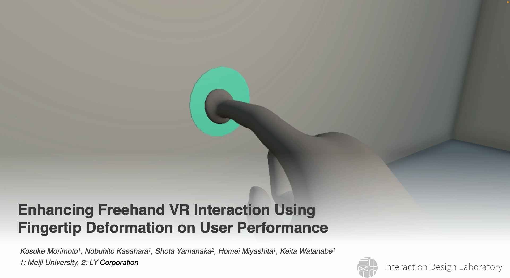

Project: UI & UX
新しいコンピュータ環境における直感的なインタフェースと操作体験に関する研究
このプロジェクトでは、ドローンやVR（バーチャルリアリティ）など、近年普及が進む新しいコンピュータ環境におけるUI（ユーザインタフェース）とUX（ユーザエクスペリエンス）の設計・評価を行っています。身体の部位を活かした操作や、仮想空間特有の身体感覚を利用することで、より直感的で快適な操作手法の実現を目指しています。
Fingertip Deformation in VR

概要: フリーハンドでのVRインタラクションにおいて、指先の変形（Fingertip Deformation）を活用することで、ユーザの操作パフォーマンスを向上させる手法の提案と評価を行った研究。
Publications
-
Enhancing Freehand VR Interaction Using Fingertip Deformation on User Performance
Kosuke Morimoto, Nobuhito Kasahara, Shota Yamanaka, Homei Miyashita, and Keita Watanabe.
In Proceedings of the 2025 31st ACM Symposium on Virtual Reality Software and Technology (VRST '25).
Article 4, 1–11. (Acceptance Rate : 22.2%)
Bump Pie Menu
概要: VR環境において、レイをオブジェクトに「引っ掛ける」感覚を利用して項目を選択する新しい円形メニューの提案。仮想空間での操作に物理的な手応えのような感覚を持たせることで、より確実で素早い選択操作ができる可能性を示唆。
Publications
-
Bump Pie Menu : VR 環境で「レイを引っ掛けて」ターゲットを選択する円形メニュー
笠原暢仁，宮下芳明．
第31回インタラクティブシステムとソフトウェアに関するワークショップ(WISS2023)予稿集，pp.1-3，2023．
Drone UI
概要: 既存のスティック型のコントローラによるドローン操縦を改善するため、空撮に焦点を当て、本質的な操作であるカメラ操作に手を使用し、足で機体を操縦するインタフェースを提案した研究。
Publications
-
手でカメラ操作し足で操縦するドローンUI
笠原暢仁, 宮下芳明.
エンタテインメントコンピューティングシンポジウム2022論文集, Vol. 2022, pp. 189-194, 2022.